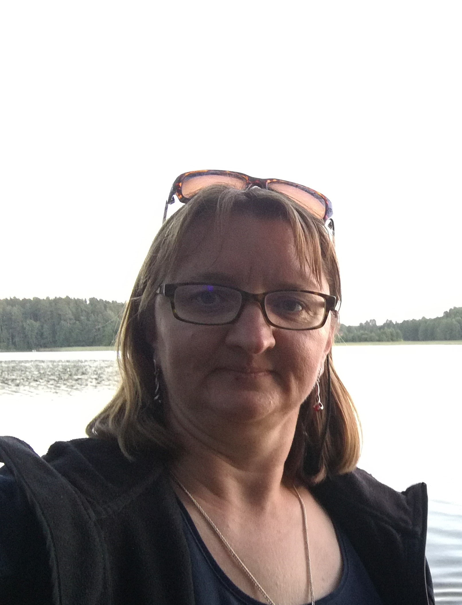

Tai pagrindinis puslapis apie mane
Esu vandenų ekologė / biologė. Pagrindinė tyrimų tematika - mikroskopinių dumblių sistematika, ekologija.
Ši skiltis skirta augalams
Čia bus aprašyti augalai ir kiti fotosintetiniai organizmai.
Ši skiltis skirta gyvūnams
Čia bus aprašyti auginami gyvūnai.